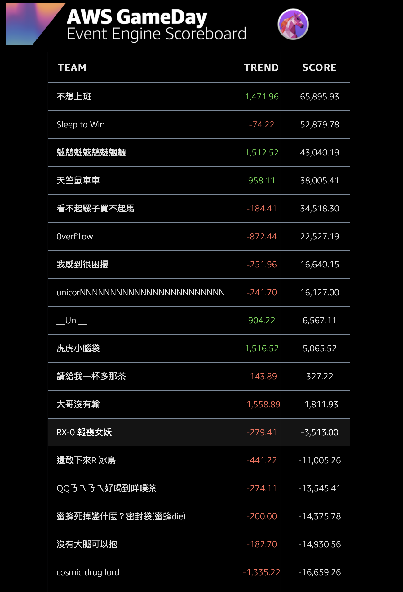
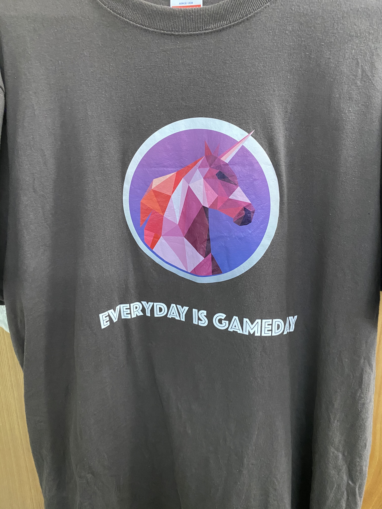

AWS GameDay 2021 逢甲大學
其實會進去打比賽其實是誤打誤撞，我以為是可以聽工作坊的，但當我前幾天看到「參賽須知」的信，才知道我又不小心進去打比賽了。
（Hmmm……我怎麼說「又」了呢？）
本篇文章為 AWS GameDay 的賽後心得，外加 AWS GameDay 的廬山真面目，畢竟我在網路上搜到的資料真的很少。
文章最後會微爆雷解法，還沒體驗的就最好就看到後記那裡就好。
比賽結果

Rank：13 / 30
Score：-3,513（對，分數是負數，你沒看錯。）
Team 1：RX-0 報喪女妖
取名的具體原因我也忘了，似乎是跟獨角獸有關係的鋼彈（？）
但組員是主辦方幫我分配進去，因為，我沒朋友陪我參加。
畢竟那時間點大家都在準備研究所，但研究所真的這麼重要嗎？
這也是我心中抱持著一種疑問吧！之後再寫一篇文章關於我對研究所的看法好了。
賽制
其實我是到比賽中間才搞懂賽制是怎麼運作的，但有些人點進來應該是蠻好奇 AWS GameDay 在做什麼（畢竟我在網路上搜尋的相關資料也不多），我就打在文章前半段。
這場比賽是「獨角獸租借系統」（如果依照他給的需求來看）
你要服務很多隻獨角獸，可能會有很多租借需求同時進來，利用 AWS 的服務去消化這些租借需求吧！
訂單成功就會加 10 ~ 13 分（依據你的服務回應速度），反之失敗則扣 1 分（只要拿到非 HTTP 200 的回應則視為訂單失敗），另外，每分鐘會依據你的伺服器成本扣除掉部分分數。
一開始機器會幫你先開好一台，那台環境架設也架設完成，服務程式也都寫好了，剩下就交給參賽選手了。
比賽現場紀錄
我其實是徹頭徹尾的划水隊員，競賽開始也不知道是什麼時候的事（似乎是講解完比賽背景、規則就開始了），但基本上就是完全還沒進入狀況就是了。w。
一方面我自己也沒有用過 AWS 服務，很怕服務開下去就忘記關掉，下個月就被收破千帳單。
上午比賽的中間還會提示説等等會有大量租借需求進來
但下午呢？講都不講直接把你的網站打下去（Ｘ）
中間過程其實也可以直接諮詢 AWS 的工作人員。
如果是要「尋求解答」，將會扣除 1,000 ~ 3,000 分的分數（具體分數有點忘記了）。
但後來想想其實「尋求解答」比較值得，與其空想再到最後獲得解答，基本上分數就被扣光了。
不會的話就直接「尋求解答」吧！這東西也要操作過才會知道怎麼做。
下午場做到一半，比賽人員還會跟你說需要換 Server 程式，上午場如果有架設完，理解原來題目給的 Bash Script，到這裡應該就比較簡單了。
但是最後還有一波訂單大量增加，但是機器一直開不起來，結果好不容易要回到正的分數，馬上跌回負分。
心得
接下來 2 月就要去公司實習了，職位是「SRE 實習生」，對我來說，這是我目前想熟悉的領域。
這場 AWS GameDay 也讓我體驗到一些 SRE 的部分工作，希望去實習以後不要被電太慘。
對我來說這是一場難得寶貴的經驗，明年可以希望再參加，或是再學習 AWS 的相關知識。
後記
這個參賽是免費的，要說付費的話就是車資吧！這次車資真的花費我不少錢啊 QQ
很期待 AWS 有朝一日可以來花蓮拓點
BTW，他們的衣服真的蠻好看的。

做法
這裡開始會寫上我這組探索出的解法囉！如果還沒參與過 AWS GameDay 就不要看到這裡了，會被暴雷！
這裡開始會寫上我這組探索出的解法囉！如果還沒參與過 AWS GameDay 就不要看到這裡了，會被暴雷！
這裡開始會寫上我這組探索出的解法囉！如果還沒參與過 AWS GameDay 就不要看到這裡了，會被暴雷！
這裡的解法都需要 Auto Scaling Group & Load Balancer，但我這裡沒有很詳盡的實作解法，只能給予一些概念。
每一台 Instanse 就像是一個服務櫃檯，一開始會給予 Instanse IP，可是一旦大量需求進來，櫃檯人員就會忙不過來，最慘就是服務當機。
Load Balancer 是負載平衡器，角色扮演是幫忙分流服務給其他的 Instanse 機器。
Auto Scaling Group 是拿來做彈性化，像是 Instanse 機器的 Manager，如果遇到機器的負載逐漸上升，就會加開 Instanse 來去消化這些服務。
除了這些以外，還需要檢查網路的 IP 問題，因為最後開機器的時候就遇到 IP 不夠用的問題（應該是我們這組沒有設定好），然後機器就一直開啟不成功。